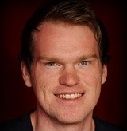

| Current | 2026 |
Senior AI Engineer | Exabel | Oslo, Norway Everything related to agentic workflows within the company. |
| 2026 | 2025 |
Senior Data Engineer | Exabel | Oslo, Norway Prediction modelling for financial time series in addition to data engineering tasks. |
| 2024 | 2023 |
Data Engineer | Exabel | Oslo, Norway 1. Developing and maintaining data pipelines. 2. Python backend development Tech: GCP, Kubernetes, Python, SQL, Snowflake, etc. |
| 2022 | 2017 |
Senior Consulting Civil Engineer | Ramboll | Drammen, Norway 1. Leading consulting projects for water engineering (pipelines, pumping stations, treatment plants, stormwater design, etc.) 2. Typically having the Discipline Lead role in projects 3. Tasks: Producing tender documents, reports, design review, project management, BIM/CAD design. 4. Example of IT project: Assisting in deploying prototype for project QA with Python web app (Flask framework) |
| 2017 | 2015 |
Project Manager | Aqua Unique Norway | Drammen, Norway 1. Tasks: Technical design in project, project management, contracts, supplier negotiations, marketing, strategy and recruitment. 2. Development of Excel spreadsheets for project budgets, pricing models, supplier comparison, technical design, etc. 3. Assisting with operation of IT infrastructure (website, email, file server, backup, wiki, CRM system, etc) |
| 2015 | 2014 |
Consulting Civil Engineer | Asplan Viak | Oslo, Norway Tasks: Water and wastewater treatment plant design and BIM/CAD modelling. Material takeoff, P&ID, tender documents. |
| 2012 | Engineering Intern | COWI | Oslo, Norway Design of water distribution systems, and CAD modelling. |
| 2009 | Developer Intern | Silicon Labs formerly Energy Micro | Oslo, Norway C programming for development kit for energy efficient microcontroller. |
Ivar Soares Urdalen

Contact
Key Skills
- Excellent academic performance in analytical subjects (coding, math, statistics, etc.)
- Fast learner (example: learned fluent Portuguese in < 6 months)
- High working capacity (example: MSc at NTNU was completed during full time job as engineer)
Technical skills
Languages: Python, SQL
Databases: SQL, Snowflake
Frameworks: FastAPI, Panel(Holoviz)
Cloud computing: AWS, GCP, Docker, Kubernetes
DevOps: CI/CD, GitHub
Languages
Norwegian: Native
English: Speak and write fluently
Portuguese: Speak and write fluently
I am currently working as a Senior AI Engineer in the Alternative Data space for finance.
I have a MSc in Financial Engineering from World Quant University and a MSc in Civil Engineering from NTNU.
I have taken courses and developed my own coding projects in the intersection of data engineering and finance. Check out my website to learn more about me and connect.
Work
Personal Projects
| Current | 2025 |
PyPI packages: coinalyze (crypto futures), fala (speech-to-text) and takit (Technical Analysis lib) Maintaining open source Python packages. |
| 2024 | FinMAS: Financial Analysis using LLM Multi-Agent Systems Capstone project at MScFE at WQU. Using LLM models in a multi-agent system to produce financial analysis reports. |
Education
| 2024 | 2022 |
MSc in Financial Engineering | World Quant University Courses: Financial Markets, Financial Data, Financial Econometrics, Derivative Pricing, Stochastic Modeling, Machine Learning, Deep Learning, Portfolio Management, Risk Management Heavy focus on using Python for data analysis |
| 2015 | 2010 |
MSc in Civil and Environmental Engineering | Norwegian University of Science and Technology (NTNU) | Trondheim, Norway Average Grade: A Additional courses: Algorithms and Data Structures, Finance, Business Economics, C++ Programming |
| 2014 | MSc Student exchange - Civil Engineering | Federal University of Santa Catarina | Florianopolis, Brazil All student work and lectures in Portuguese |
| 2013 | Spanish and Portuguese Language Studies | Independent learning | South America Web apps, audio courses, etc |
| 2009 | 2008 |
1st year - MSc in Cybernetics and Robotics | Norwegian University of Science and Technology (NTNU) | Trondheim, Norway Grade (1st yr): A |
Awards
| 2007 | Winner of Informatics Olympiad for High School Students | Norwegian Informatics Olympiad | Trondheim, Norway Algorithmic Programming Competition for High School Students (C++ Programming) Participated in Baltic Informatics Olympiad (BOI) and International Olympiad in Informatics (IOI). |
Courses
| 2022 | Data Engineering Foundations - Certificate | LinkedIn Learning ETL pipelines, Hive, Hadoop, Spark, and Airflow |
| 2014 | Data Analysis and Statistical Inference - Certificate | Duke University (Coursera) Statistics, Inference of Numerical and Categorical variables, Multiple Linear Regression |
| 2013 | Computing for Data Analysis - Certificate | Johns Hopkins (Coursera) Intro course for R |
| 2012 | Machine Learning - Certificate | Stanford (Coursera) Logistic Regression, Neural Networks, Support Vector Machines, K-means clustering, Principal Component Analysis |